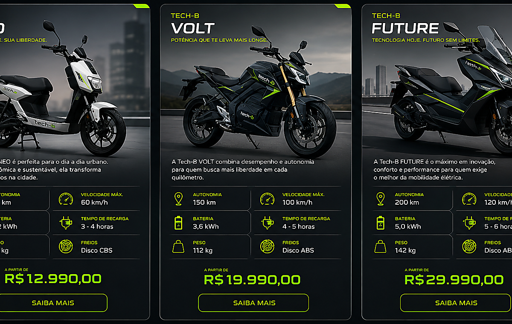

Tecnologia adaptada
Solucoes inspiradas em mercados estrangeiros e ajustadas para ruas, rotinas e necessidades brasileiras.
Sobre a TechB
Fundada em 2026, em Sao Paulo, a TechB nasceu para aproximar motos eletricas modernas da realidade das cidades brasileiras.

Nossa historia
A TechB surgiu observando tres desafios comuns da mobilidade urbana: o custo dos combustiveis, o tempo perdido no transito e a necessidade de solucoes mais limpas para os deslocamentos diarios. A proposta da marca e oferecer motos eletricas com boa autonomia, manutencao reduzida e custo de uso mais previsivel.
O nome une dois conceitos que definem a empresa: Tech, de tecnologia, e B, de bike. A partir dessa identidade, a TechB busca referencias e tecnologias estrangeiras ja consolidadas no mercado global, adaptando componentes, desempenho e atendimento para o perfil do consumidor brasileiro.
Mais do que vender motos eletricas, a TechB trabalha para criar uma experiencia de compra clara. Cada modelo e pensado para quem precisa circular pela cidade com economia, seguranca e menor impacto ambiental, utilizando materiais de origem responsavel e solucoes de baixa emissao de carbono.
Diferenciais
Da escolha do modelo ao uso no dia a dia, a marca combina design moderno, custo-beneficio e suporte para quem esta migrando para a mobilidade eletrica.
Solucoes inspiradas em mercados estrangeiros e ajustadas para ruas, rotinas e necessidades brasileiras.
Menor custo por quilometro e manutencao mais simples em comparacao com motos a combustao.
Modelos eletricos com baixa emissao de carbono e foco em deslocamentos urbanos mais limpos.
Uso de materiais sustentaveis ou de origem controlada em componentes e acabamento.
Cobertura de garantia para aumentar a seguranca na compra e no uso dos modelos.
Atendimento especializado para orientar revisoes, cuidados com bateria e manutencao preventiva.
Experiencia de pilotagem antes da compra para avaliar conforto, desempenho e ergonomia.
Ajuda para entender tempo de carga, rotina de uso e melhor forma de recarregar em casa ou no trabalho.
Mobilidade urbana inteligente
Entregamos uma nova forma de se mover pela cidade: mais economica, mais inteligente e mais sustentavel.
Agendar test ride